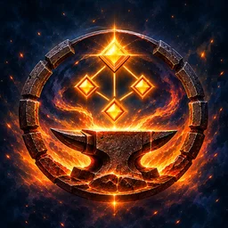
Talentsmith BigDKo-fi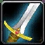
Warrior – Arms two-handerRaid Split 32 / 17 / 2 (Arms / Fury / Protection)
Two-hander Mortal Strike build with Weaponmaster, Improved Slam and Bloodthrill, dipping Fury for Cruelty, Unbridled Wrath and Booming Voice.
Talents in this build
Arms · 32
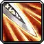
Improved Heroic Strike 3/3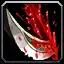
Improved Rend 3/3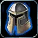
Improved Tactical Mastery 3/3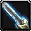
Improved Overpower 2/2 Anger Management 1/1
Anger Management 1/1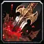
Deep Wounds 3/3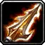
Spearing Strike 1/1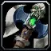
Two-Handed Weapon Specialization 3/3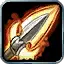
Impale 2/2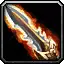
Bloodthrill 2/2- Sweeping Strikes 1/1
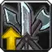
Weaponmaster 5/5 Improved Slam 2/2
Improved Slam 2/2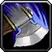
Mortal Strike 1/1
Fury · 17
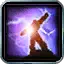
Booming Voice 5/5- Cruelty 5/5
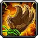
Unbridled Wrath 5/5- Reckless Swings 1/1
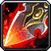
Improved Execute 1/2
Protection · 2
 Improved Bloodrage 2/2
Improved Bloodrage 2/2
Leveling order
One talent point per level from 10 to 60. Follow it top to bottom.
| Level | Talent | Tree |
|---|---|---|
| 10 | Improved Heroic Strike 1/3 | Arms |
| 11 | Improved Heroic Strike 2/3 | Arms |
| 12 | Improved Heroic Strike 3/3 | Arms |
| 13 | Improved Rend 1/3 | Arms |
| 14 | Improved Rend 2/3 | Arms |
| 15 | Improved Rend 3/3 | Arms |
| 16 | Improved Tactical Mastery 1/3 | Arms |
| 17 | Improved Tactical Mastery 2/3 | Arms |
| 18 | Improved Tactical Mastery 3/3 | Arms |
| 19 | Improved Overpower 1/2 | Arms |
| 20 | Improved Overpower 2/2 | Arms |
| 21 | Arms | |
| 22 | Deep Wounds 1/3 | Arms |
| 23 | Deep Wounds 2/3 | Arms |
| 24 | Deep Wounds 3/3 | Arms |
| 25 | Spearing Strike 1/1 | Arms |
| 26 | Two-Handed Weapon Specialization 1/3 | Arms |
| 27 | Two-Handed Weapon Specialization 2/3 | Arms |
| 28 | Two-Handed Weapon Specialization 3/3 | Arms |
| 29 | Impale 1/2 | Arms |
| 30 | Impale 2/2 | Arms |
| 31 | Bloodthrill 1/2 | Arms |
| 32 | Bloodthrill 2/2 | Arms |
| 33 | Sweeping Strikes 1/1 | Arms |
| 34 | Weaponmaster 1/5 | Arms |
| 35 | Weaponmaster 2/5 | Arms |
| 36 | Weaponmaster 3/5 | Arms |
| 37 | Weaponmaster 4/5 | Arms |
| 38 | Weaponmaster 5/5 | Arms |
| 39 | Arms | |
| 40 | Arms | |
| 41 | Mortal Strike 1/1 | Arms |
| 42 | Booming Voice 1/5 | Fury |
| 43 | Booming Voice 2/5 | Fury |
| 44 | Booming Voice 3/5 | Fury |
| 45 | Booming Voice 4/5 | Fury |
| 46 | Booming Voice 5/5 | Fury |
| 47 | Cruelty 1/5 | Fury |
| 48 | Cruelty 2/5 | Fury |
| 49 | Cruelty 3/5 | Fury |
| 50 | Cruelty 4/5 | Fury |
| 51 | Cruelty 5/5 | Fury |
| 52 | Unbridled Wrath 1/5 | Fury |
| 53 | Unbridled Wrath 2/5 | Fury |
| 54 | Unbridled Wrath 3/5 | Fury |
| 55 | Unbridled Wrath 4/5 | Fury |
| 56 | Unbridled Wrath 5/5 | Fury |
| 57 | Reckless Swings 1/1 | Fury |
| 58 | Improved Execute 1/2 | Fury |
| 59 | Protection | |
| 60 | Protection |
Other Warrior builds: Fury dual-wield · Protection shield tank · Arms leveling · Arms PvP · Bloodthirst tank (Fury/Protection) off-meta